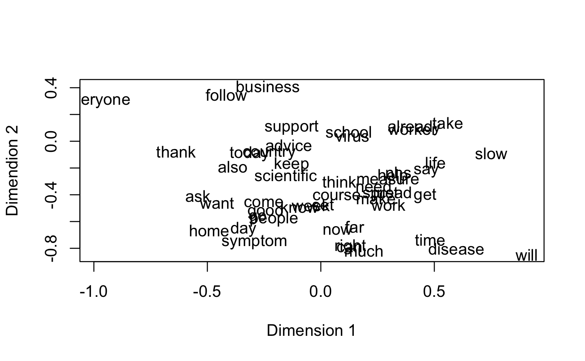
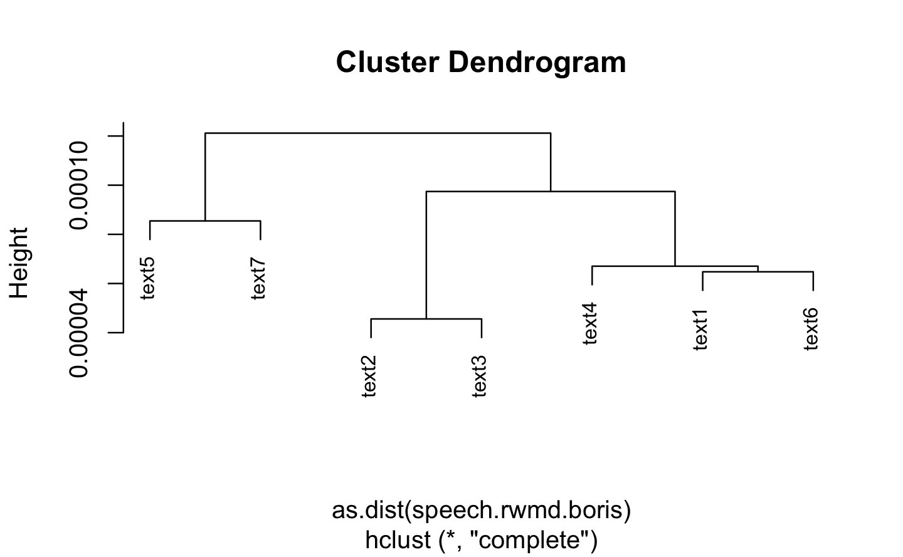
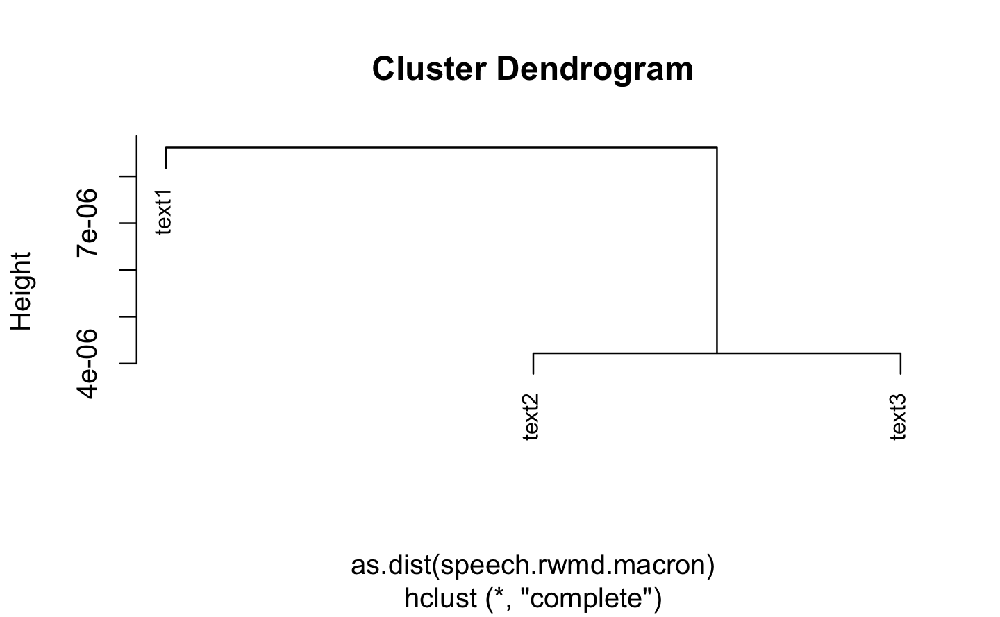

Chapter 7 Word Embedding
7.1 Boris Johnson
Here, we compute the co-occurence matrix. We use the fcm function from quanteda. We use a window lenght 5.
p<-2 #word embedding dimension
speech.glove.boris<-GlobalVectors$new(rank = p,x_max = 10) #xmas is a neede technical option
speech.weC.boris<-speech.glove.boris$fit_transform(speech.coo.boris)
#> INFO [17:49:36.271] epoch 1, loss 0.0343
#> INFO [17:49:36.290] epoch 2, loss 0.0244
#> INFO [17:49:36.310] epoch 3, loss 0.0225
#> INFO [17:49:36.327] epoch 4, loss 0.0215
#> INFO [17:49:36.344] epoch 5, loss 0.0207
#> INFO [17:49:36.352] epoch 6, loss 0.0201
#> INFO [17:49:36.358] epoch 7, loss 0.0194
#> INFO [17:49:36.366] epoch 8, loss 0.0188
#> INFO [17:49:36.373] epoch 9, loss 0.0182
#> INFO [17:49:36.381] epoch 10, loss 0.0176For illustration purpose, we now plot the 50 most used terms
n.w.boris<-apply(corpus_boris.dfm,2,sum) #compute the number of times each term is used
index<-order(n.w.boris,decreasing = TRUE)[1:50]
plot(speech.weC.boris[index,],type = "n",xlab = "Dimension 1", ylab = "Dimendion 2")
text(x=speech.weC.boris[index,],labels = rownames(speech.weC.boris[index,]))
speech.dtm <- corpus_boris.dfm
speech.rwmd.model.boris<-RelaxedWordMoversDistance$new(corpus_boris.dfm,speech.weC.boris)
speech.rwms.boris<-speech.rwmd.model.boris$sim2(corpus_boris.dfm)
speech.rwmd.boris<-speech.rwmd.model.boris$dist2(corpus_boris.dfm)
speech.hc.boris<-hclust(as.dist(speech.rwmd.boris))
plot(speech.hc.boris,cex=0.8)
We can observe that there is some coherence within the groups in terms the date of the speech.
speech.cl.boris<- cutree(speech.hc.boris,k=4)
corpus_boris.dfm[speech.cl.boris==1,]
#> Document-feature matrix of: 3 documents, 797 features (70.8% sparse).
#> features
#> docs morning government's cobr emergency committee coronavirus
#> text1 1 2 1 1 1 3
#> text4 0 0 0 1 0 2
#> text6 0 0 0 0 0 1
#> features
#> docs outbreak first scotland minister
#> text1 5 4 1 3
#> text4 0 0 0 0
#> text6 0 0 0 0
#> [ reached max_nfeat ... 787 more features ]7.2 Macron
p<-2 #word embedding dimension
speech.glove.macron<-GlobalVectors$new(rank = p,x_max = 10) #xmas is a neede technical option
speech.weC.macron<-speech.glove.macron$fit_transform(speech.coo.macron)
#> INFO [17:49:37.516] epoch 1, loss 0.0240
#> INFO [17:49:37.528] epoch 2, loss 0.0177
#> INFO [17:49:37.552] epoch 3, loss 0.0161
#> INFO [17:49:37.565] epoch 4, loss 0.0153
#> INFO [17:49:37.576] epoch 5, loss 0.0147
#> INFO [17:49:37.594] epoch 6, loss 0.0142
#> INFO [17:49:37.608] epoch 7, loss 0.0136
#> INFO [17:49:37.630] epoch 8, loss 0.0130
#> INFO [17:49:37.643] epoch 9, loss 0.0124
#> INFO [17:49:37.658] epoch 10, loss 0.0119For illustration purpose, we now plot the 50 most used terms
n.w.macron<-apply(corpus_macron.dfm,2,sum) #compute the number of times each term is used
index<-order(n.w.macron,decreasing = TRUE)[1:50]
plot(speech.weC.macron[index,],type = "n",xlab = "Dimension 1", ylab = "Dimendion 2")
text(x=speech.weC.macron[index,],labels = rownames(speech.weC.macron[index,]))
speech.dtm.macron <- corpus_macron.dfm
speech.rwmd.model.macron<-RelaxedWordMoversDistance$new(corpus_macron.dfm,speech.weC.macron)
speech.rwms.macron<-speech.rwmd.model.macron$sim2(corpus_macron.dfm)
speech.rwmd.macron<-speech.rwmd.model.macron$dist2(corpus_macron.dfm)
speech.hc.macron<-hclust(as.dist(speech.rwmd.macron))
plot(speech.hc.macron,cex=0.8) We can observe that there is some coherence within the groups in terms the date of the speech.
speech.cl.macron<- cutree(speech.hc.macron,k=2)
corpus_macron.dfm[speech.cl.macron==1,]
#> Document-feature matrix of: 1 document, 1,469 features (51.4% sparse).
#> features
#> docs france dear past country spread virus covid-19 several
#> text1 10 6 3 4 8 13 4 5
#> features
#> docs thousand fellow
#> text1 2 4
#> [ reached max_nfeat ... 1,459 more features ]